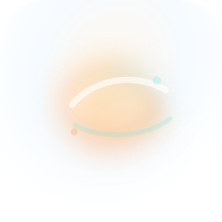
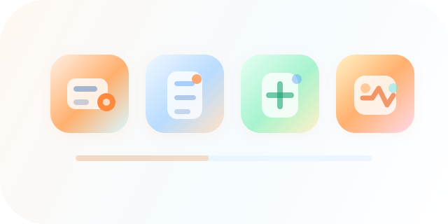

D01 v03 小T / 实体助手方向
用于封面、角色选择、首页提示和空状态。本版补足实体头身结构、柔和底座和体积阴影，避免 v02 过于头像化。
- 重点看：是否有实体感但不回到复杂凌乱。
- 通过：像轻量产品助手，可亲近、干净、有体积。
- 不通过：仍像平面头像，或过度玩具化、吉祥物化。
assets-review/d01-assistant-direction-v03.svg
本版根据 v02 人工反馈调整：D01 补足轻量实体样式，D02 提亮弥散氛围并减少黑感，D03 校准图标视觉中心，D04 保持当前方向。当前仍只评审方向，不进入完整图库生产。
用于封面、角色选择、首页提示和空状态。本版补足实体头身结构、柔和底座和体积阴影，避免 v02 过于头像化。

用于数据分析、设置、系统健康和 AI 洞察。本版降低暗部，保留轻柔氛围，不做硬实体球。

用于应用中心、设置入口和数据模块。本版校准四枚图标的中心、图形高度和装饰点位置。
用于支付设置、充值、收款说明等页面。本版沿用 v02 方向，仅同步版本，后续可进入微插画扩展。